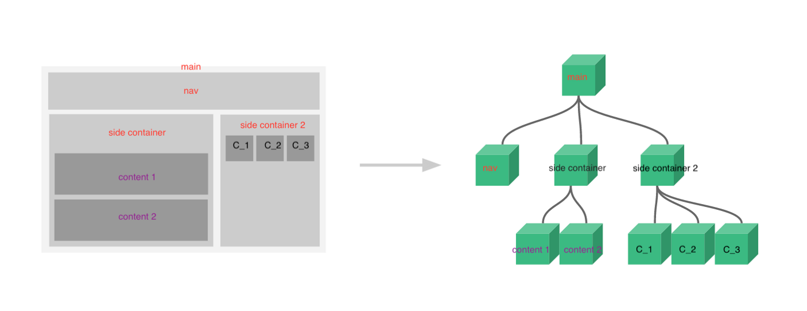
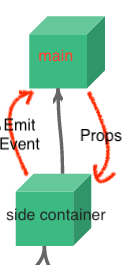
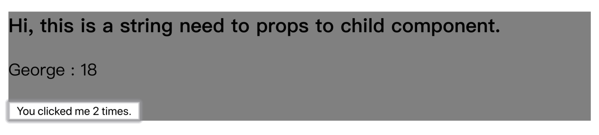
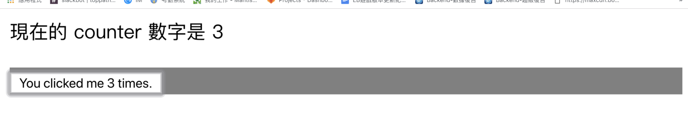

# Vue Components 組件之間的溝通方式
# 溝通，也是一種技巧
在 Vue 的設計模式中，我們常常會將畫面佈局以一個一個組件 (component) 作為單位進行切分。並以 app.vue 為 root 向下掛載各自的 component。

https://vuejs.org/v2/guide/components.html
以官網的佈局架構圖為例，我們可以簡易的了解 Vue 將網站視圖以一個一個組件切分，並且將需要的組件以掛載的方式嵌入其他組件當中進行建置。
如此作法的好處是，各個組件互相獨立、互不影響，並且我們可以極大化的重用我們已經寫過的、相似功能的組件。
但是問題來了，若是我們今天有兩個組件之間需要互相溝通 (傳遞值) 時，該怎麼辦呢？
Vue 對組件之間溝通主要可以分為三種案例： 父組件傳值給子組件 、 子組件傳值給父組件 、 兄弟組件之間的溝通 。

上方圖片簡單的幫我們歸納了 Vue 在父子組件的溝通方式： 父傳子用 props
將資料向下傳遞； 子傳父用 events emit 將資料向上傳遞。
# 父組件傳遞參數給子組件 : props
以官網的 Vue 組件示例
首先定義一個 component 叫做 button-counter ，這是一個 每點擊一下就可以讓 button 上的 counter+1 的組件。利用 props 這個 Vue 的屬性，接受父組件給予的參數 title 。
1
2
3
4
5
6
7
8
9
10
11
12
13
14
15
16
17// 定义一个名为 button-counter 的新组件
Vue.component('button-counter', {
props: ['title', 'message'],
data: function () {
return {
count: 0
}
},
template:
`
<div style="background-color:gray;">
<h3>{{ title }}</h3>
<p>{{ message.name }} : {{ message.age }}</p>
<button v-on:click="count++">You clicked me {{ count }} times.</button>
</div>
`
})
至於父組件如何傳遞參數過去呢？就利用將要傳遞的參數當作是 html 上的 attribute 進行撰寫就行了。
以下面的程式碼為例：
我們將 `Hi, this is a string needs to props to child component. ` 這個字串利用在 button-counter 組件中的 title 屬性傳遞給上方定義的子組件。
1
2
3
4
5
6
7
8
9
10
11<template>
<div id="components-demo">
<button-counter :title="'Hi, this is a string need to props to child component.'" :message="{name:'George', 'age': 18}"></button-counter>
</div>
</template>
<script>
new Vue({
el: '#components-demo'
});
</script>
這兩段在網頁上的結果就會長成類似這樣：

畫面中印出了我們在父組件要傳入子組件的文字 `Hi, this is a string need to props … `，並且也順利印出了我們傳遞進去的物件參數 {“name”: George : “age”: 18 } 。
至此，我們知道如何將參數從父組件傳遞給子組件了。
我們也瞭解了傳遞給子組件的參數不限定要是 數字(Number) 、 字串(string) ，也可以是 陣列(Array) 、 物件(Object) 或 其他型別 。
以上方程式為例，我們便在 message 參數傳遞了一個有 name 與 age 的 object 。
# 子組件傳遞參數給父組件 : event emitter
在 Vue 的設計哲學中，每一個組件為各自獨立、互不干涉的。因此越是下層的組件，更是不應該能夠直接更改上層組件的資料。
但是若真有需要，子組件要傳遞參數給父組件，該怎麼辦呢？
Vue 使用事件觸發來解決。
我們可以在 父組件 的 html 元件中定義要監聽的事件名稱，並且撰寫一個 method 將事件接收到的值傳遞進去進行處理。 ex. custom-event-trigger=”customEventTriggerHappend” ；然後在 子組件 要發送事件的地方使 用 $emit(“事件名稱”, “要傳遞的值”) 將參數傳遞給 父組件 。
以下方程式碼為例：
1
2
3
4
5
6
7
8
9
10
11
12
13
14
15
16
17
18
19
20
21
22
23
24
25
26
27
28
29
30
31
32
33
34
35
36
37
38
39
40
41
42
43
44
45
46
47
48
49
50<!DOCTYPE html>
<html lang="en">
<head>
<meta charset="UTF-8">
<meta name="viewport" content="width=device-width, initial-scale=1.0">
<meta http-equiv="X-UA-Compatible" content="ie=edge">
<title>Document</title>
</head>
<body>
<script src="https://cdn.jsdelivr.net/npm/vue@2.5.17/dist/vue.js"></script>
<div id="components-demo">
現在的 counter 數字是 {{ curlCounter }}
<button-counter @custom-event-trigger="customEventTriggerHappend"></button-counter>
</div>
</body>
<script>
// 定义一个名为 button-counter 的新组件
Vue.component('button-counter', {
props: ['title', 'message'],
data: function () {
return {
count: 0,
}
},
template:
`
<div style="background-color:gray;">
<h3>{{ title }}</h3>
<button v-on:click="(++count) && ($emit('custom-event-trigger', count))">You clicked me {{ count }} times.</button>
</div>
`
})
new Vue({
el: '#components-demo',
data: {
curlCounter: 0,
},
methods: {
customEventTriggerHappend( counter ) {
this.curlCounter = counter;
},
},
});
</script>
</html>
在 子組件 建立要傳遞的事件名稱 custom-event-trigger ，並且在要傳遞資訊時，使用 $emit 將值傳遞出去。
在 父組件 中增加相同的事件監聽 custom-event-trigger 。當此事件發生，就去呼叫 method customEventTriggerHappend ，此 method 將會接收 子組件 傳上來的值。
如此我們便得以利用 event listener 的方式獲得 子組件 要傳遞的值。
最終會得到的結果會是下圖所示：

# 兄弟組件之間的溝通
知道了父子組件的溝通方式後，衍生到最後一個話題。若是有一個情況，需要讓同層級的兩個子組件互相傳遞資訊，該怎麼辦呢？
由於 Vue 中的組件都是 各自獨立 的，此時我們需要借助一個 空的 Vue 做為橋樑。
1
2
3
4// 創建空的 Vue
let commVueObj = new Vue();
// 觸發 A 組件的事件 "event_1"
commVueObj.$emit('event_1', "any thing values");
此方式算是簡單易懂的。但是缺點也是顯而易見的：當專案越來越龐大，這樣的寫法勢必會造成未來維護的困難，因此在較大型的專案中，官方推薦使用 Vuex 。